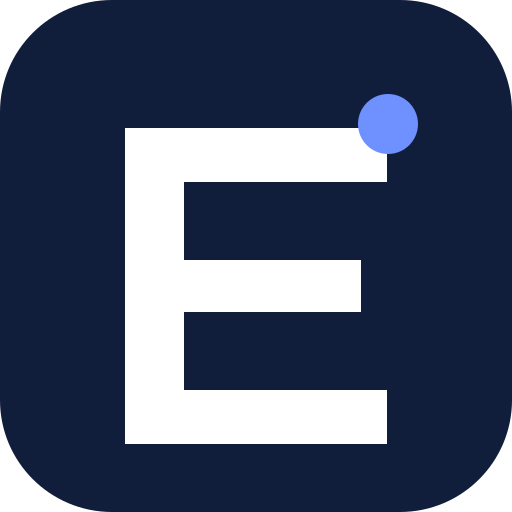

VocabFlow
از فارسی به انگلیسی · یادگیری فعالمرور امروز
در حال محاسبه...
مسیر یادگیری CEFR
سطوح A1 تا C2 برای دستهبندی و پیگیری سطح واژگان در نظر گرفته شدهاند. سطح هر واژه از دیکشنری/فهرست منبع در صورت موجود بودن دریافت میشود؛ برای همه کلمات سطح قطعی وجود ندارد.
روش کار الگوریتم
پاسخ را پیش از دیدن پشت کارت از حافظه بازیابی کن. سپس میزان دشواری را صادقانه ثبت کن. پاسخ غلط به مرور زودهنگام برمیگردد؛ پاسخهای موفق فاصله را افزایش میدهند. این الگوریتم با الهام از بازیابی فعال و مرور فاصلهدار طراحی شده و تضمین علمیِ تسلط یا نمره آزمون نیست.
VocabFlow · نسخه وباپلیکیشن نصبپذیر · دادهها محلی هستند